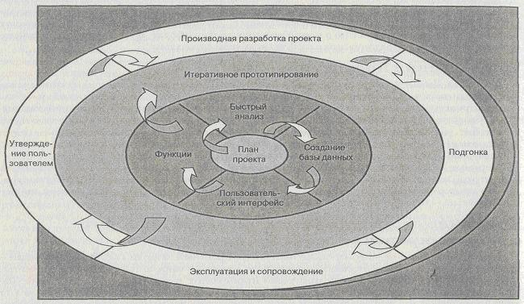

Модель быстрого прототипирования
Модель быстрого прототипирования представлена на рисунке 2.4.

Рисунок 2.4 - Модель быстрого прототипирования
Преимущества модели быстрого прототипирования.
- Взаимодействие заказчика с системой начинается на раннем этапе разработки.
- В процессе разработки можно внести новые требования.
- Можно выявить проблему до привлечения дополнительных ресурсов.
- Позволяет выполнять гибкое проектирование и разработку.
- Позволяет максимально уменьшить количество неточностей в требованиях.
- Небольшой объем доработок.
Недостатки модели быстрого прототипирования.
- Репутация «разработанного на скорую руку» метода.
- Может быть уделено недостаточно внимания качеству ПО или долгосрочной надежности.
- Решение трудных проблем может отодвигаться на будущее.
- При досрочном завершении проекта у пользователя останется только частичная система.
- Прототипирование вызывает зависимость.
- Нет информации о точном числе итераций.
Область применения модели быстрого прототипирования.
- Требования не известны заранее.
- Требования непостоянны.
- Есть потребность в разработке пользовательских интерфейсов.
- Выполняется не имеющая аналогов разработка.
- Осуществляются временные демонстрации.
- При средней и высокой степенях риска.
- Применяется с каскадной моделью.
- Вместе с элементами анализа и проектирования.